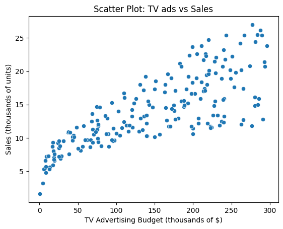
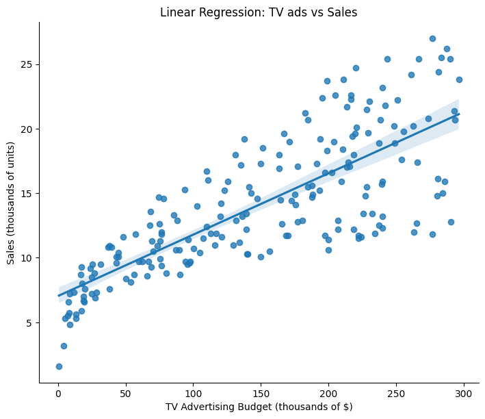
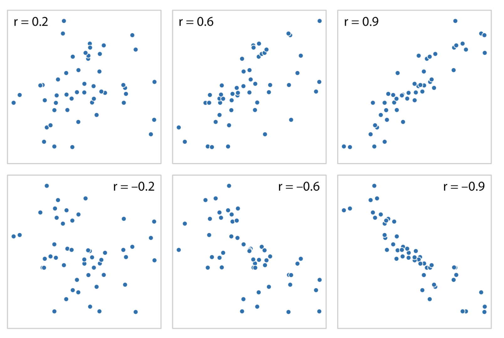
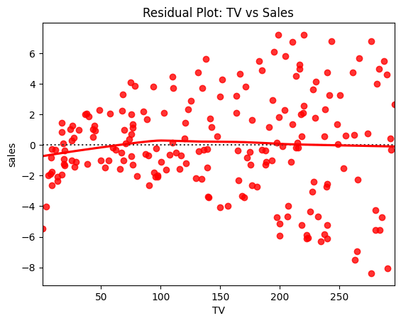
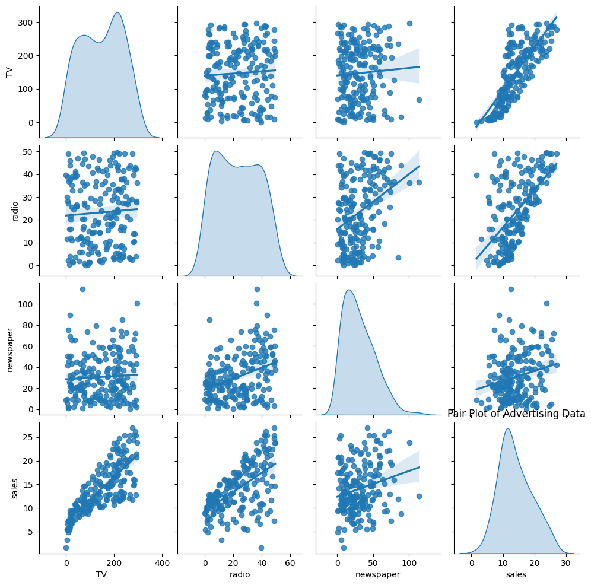
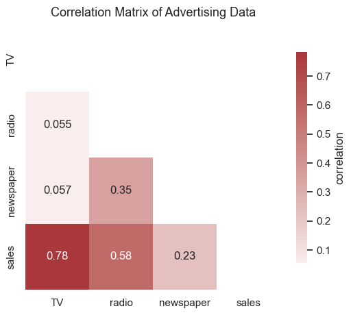

散点图¶
简介¶
散点图是一种二维图表，用点的形式表示两个变量之间的对应关系。
横坐标（x 轴）：一个变量（自变量）
纵坐标（y 轴）：另一个变量（因变量）
每个点代表一组观测值
功能¶
展示变量之间的关系
判断变量之间是否存在线性关系、非线性关系或无关性。
发现相关性
趋势向上 → 正相关
趋势向下 → 负相关
无明显趋势 → 无相关
检测异常值 (outliers)
离群点会远离大部分数据，提示数据异常或特殊情况。
分布与聚类分析
观察点的分布形态，判断是否存在某种分组或聚类现象。
建模前的可视化检查
帮助决定是否适合用线性回归、多项式回归等模型。
优点¶
直观性强：能快速判断变量之间的关系。
信息量大：能同时展示所有观测点的分布情况。
易于发现规律：趋势、相关性和聚类模式一目了然。
支持扩展：可以通过颜色、大小等增加第三个变量的维度。
缺点¶
只能展示两个变量（或加上颜色/大小后扩展到 3 个维度）。
数据量太大时会重叠，难以看清规律（需用透明度或采样）。
关系复杂时不易解释，尤其是非线性或多重交互效应。
不提供定量指标，只能作为定性分析工具，需要配合统计方法（如相关系数、回归分析）。
绘制散点图¶
绘制电视广告投入与销量之间的散点图¶
import seaborn as sns
import matplotlib.pyplot as plt
import pandas as pd
df=pd.read_csv("Advertising.csv")
sns.scatterplot(data=df, x="TV", y="sales")
plt.title("Scatter Plot: TV ads vs Sales")
plt.xlabel("TV Advertising Budget (thousands of $)")
plt.ylabel("Sales (thousands of units)")

添加回归函数¶
sns.lmplot(data=df, x="TV", y="sales", height=6, aspect=1.2)
plt.title("Linear Regression: TV ads vs Sales")
plt.xlabel("TV Advertising Budget (thousands of $)")
plt.ylabel("Sales (thousands of units)")
plt.show()

计算相关性指数¶
import pandas as pd
# 计算 TV 与 sales 的相关系数
r = df["TV"].corr(df["sales"])
print(r)
0.7822244248616066， r>0.6，证明两者有相关性
r 值范围 |
相关性强度 |
|---|---|
|r| > 0.7 |
强相关 |
0.3 ≤ |r| ≤ 0.7 |
中等相关 |
|r| < 0.3 |
弱相关或几乎无关 |
不同r值的数据分布示例：

绘制残差图¶
sns.residplot(x="TV", y="sales", data=df, lowess=True, color="red")
plt.title("Residual Plot: TV vs Sales")
plt.show()

观察残差分布的作用主要是用来 验证模型是否合适。残差就是「真实值 - 模型预测值」，如果模型合理，残差应该是“随机噪声”。如果点云在 0 上下随机分布 → 说明线性回归的假设成立。如果残差呈现出弯曲趋势 → 表明模型可能需要换成非线性回归。
绘制成对关系图¶
sns.pairplot(df[["TV", "radio", "newspaper", "sales"]], kind="reg", diag_kind="kde")
plt.show()

自变量与销售额 (sales) 的关系¶
TV vs sales：关系最明显，几乎呈线性正相关，说明电视广告投入越多，销量越高。
radio vs sales：也有正相关，但散点比 TV 分散，关系不如 TV 明显。
newspaper vs sales：相关性最弱，点云比较散，说明报纸广告对销量影响不大。
自变量之间的关系¶
TV 与 radio 基本没有明显关系（点比较分散）。
radio 与 newspaper 有一定弱相关。
TV 与 newspaper 几乎无关。
单变量分布¶
对角线上的 KDE 曲线展示了每个变量的分布：
TV 投入主要集中在 50~300 区间，有两个峰。
radio 投入相对均匀分布。
newspaper 投入偏小，大部分在 0~50 之间。
sales（销量）大部分集中在 10~20 之间。
总结¶
电视广告 是影响销量的最主要因素；
广播广告 有一定作用，但不如电视显著；
报纸广告 几乎没有明显作用；
各广告渠道之间 基本独立。
相关矩阵热图 （correlogram）¶
import pandas as pd
import seaborn as sns
import matplotlib.pyplot as plt
import numpy as np
# 读取数据
df = pd.read_csv("Advertising.csv", index_col=0)
# 计算相关矩阵
corr = df.corr()
# 创建下三角掩码(
# 避免信息冗余
mask = np.triu(np.ones_like(corr, dtype=bool))
# 绘制热图
sns.set_theme(style="white")
plt.figure(figsize=(6, 5))
ax = sns.heatmap(
corr, mask=mask, cmap="vlag", center=0, annot=True,
cbar_kws={"shrink": 0.8, "label": "correlation"}
)
# 设置标题
plt.title("Correlation Matrix of Advertising Data", fontsize=13, pad=10)
plt.show()

拟合函数¶
使用sklearn¶
from sklearn.linear_model import LinearRegression
X = df[["TV", "radio", "newspaper"]] # 多元自变量
y = df["sales"]
model = LinearRegression()
model.fit(X, y)
print("截距:", model.intercept_)
print("回归系数:", model.coef_)
截距: 2.9388893694594085
回归系数: [ 0.04576465 0.18853002 -0.00103749]
Python定义函数¶
def predict_sales(TV, radio, newspaper):
intercept = 2.9388893694594085
coef_TV = 0.04576465
coef_radio = 0.18853002
coef_newspaper = -0.00103749
sales = intercept + coef_TV * TV + coef_radio * radio + coef_newspaper * newspaper
return sales
预测销量¶
# 输入 TV=100, radio=20, newspaper=30
print(predict_sales(100, 20, 30))
11.254830069459409